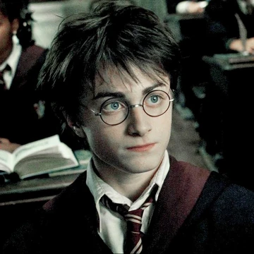
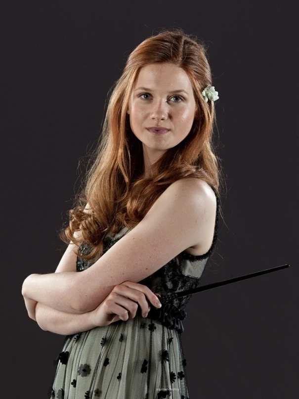
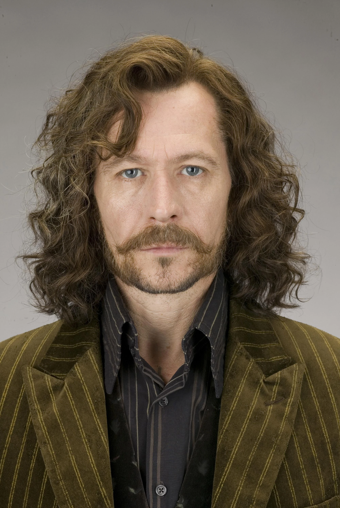
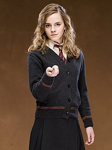
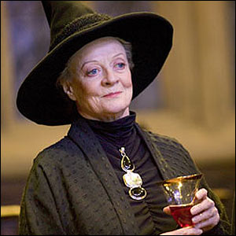

Albus Dumbledore
Albus Dumbledore, a character from the beloved Harry Potter series created by J.K. Rowling, is one of the most iconic and enigmatic figures in the wizarding world. As the wise and kind-hearted headmaster of Hogwarts School of Witchcraft and Wizardry, Dumbledore serves not only as a mentor and protector to the young wizard Harry Potter but also as a symbol of wisdom, integrity, and moral strength.

Harry Potter
Harry Potter is described as a gifted wizard apprentice. He has a particular talent for flying, which manifests itself in Harry Potter and the Philosopher's Stone the first time he tries it, and gets him a place on a Quidditch team one year before the normal minimum joining age.

Astoria Greengrass
Astoria Malfoy (née Greengrass) is a minor character in Harry Potter. In between the battle of Hogwarts and the epilogue, Astoria married Draco Malfoy and became pregnant with Scorpius Malfoy, their only child. Astoria tragically inherited the family curse that her ancestor had and she passed away. She also was a member of the Greengrass family, one of the Sacred Twenty-Eight.

Ginny Weasley
Ginevra Molly "Ginny" Weasley is one of the main characters in the Harry Potter franchise. In the films, she was portrayed by Bonnie Wright. The only daughter of Arthur and Molly, the younger sister of Bill, Charlie, Percy, Fred, George and Ron, Ginny is the only girl in the Weasley family. At a young age, she fell in love with the wizard Harry Potter but could never act upon those feelings, until the sixth film/book. She is a very talented and outspoken person.

Ron Weasley
Ronald Bilius Weasley is a fictional character in J. K. Rowling's Harry Potter fantasy novel series. His first appearance was in the first book of the series, Harry Potter and the Philosopher's Stone, as the best friend of Harry Potter and Hermione Granger. He is a member of the Weasley family, a pure blood family that resides in "The Burrow" outside Ottery St. Catchpole. Being the only member of the three main characters raised in magical society, he also provides insight into the Wizarding World's magical customs and traditions.
Ron Weasley
Ronald Bilius Weasley is a fictional character in J. K. Rowling's Harry Potter fantasy novel series. His first appearance was in the first book of the series, Harry Potter and the Philosopher's Stone, as the best friend of Harry Potter and Hermione Granger. He is a member of the Weasley family, a pure blood family that resides in "The Burrow" outside Ottery St. Catchpole. Being the only member of the three main characters raised in magical society, he also provides insight into the Wizarding World's magical customs and traditions.

Sirius Black
Sirius Black III also known as Padfoot or Snuffles (in his Animagus form), was an English pure-blood wizard, the older son of Orion and Walburga Black, the older brother of Regulus Black, and godfather of Harry Potter. Although he was the heir of the House of Black, Sirius disagreed with his family's belief in blood purity and defied tradition when he was Sorted into Gryffindor House instead of Slytherin at Hogwarts School of Witchcraft and Wizardry, which he attended from 1971 to 1978. As the rest of his family had been in Slytherin, he was the odd one out.

Hermione Granger
Hermione's most prominent features include her prodigious intellect and cleverness. She is levelheaded, book-smart, and always very logical. Throughout the series, Hermione uses the skills of a librarian and teacher to gather the information needed to defeat Voldemort, the "Dark Lord".
.jpg)
Lord Voldemort
Lord Voldemort is a character and the main antagonist in J. K. Rowling's series of Harry Potter novels. The character first appeared in Harry Potter and the Philosopher's Stone, which was published in 1997, and returned either in person or in flashbacks in each book and its film adaptation in the series except the third, Harry Potter and the Prisoner of Azkaban, in which he is only mentioned.

Rubeous Hagrid
Rubeus Hagrid is a fictional character in the Harry Potter book series written by J. K. Rowling. He is introduced in Harry Potter and the Philosopher's Stone as a half-giant and half-human who is the gamekeeper and Keeper of Keys and Grounds of Hogwarts, the primary setting for the first six novels.

Severus Snape
Severus Snape is a fictional character in J. K. Rowling's Harry Potter series. He is an exceptionally skilled wizard whose extremely cold and resentful exterior conceals deep emotions and anguish. A Professor at Hogwarts School of Witchcraft and Wizardry, Snape is hostile to Harry due to his resemblance to his father James Potter, who bullied Snape during their time together at Hogwarts.

Minerva McGonagall
Professor Minerva McGonagall is a fictional character in J. K. Rowling's Harry Potter series. Professor McGonagall is a professor at Hogwarts School for Witchcraft and Wizardry, the head of Gryffindor House, the professor of Transfiguration, the Deputy Headmistress under Albus Dumbledore and a member of the Order of the Phoenix.